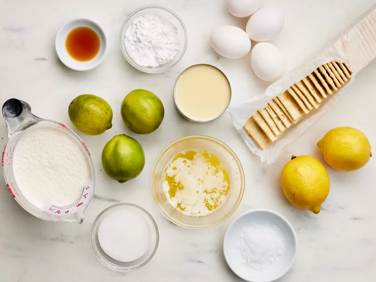
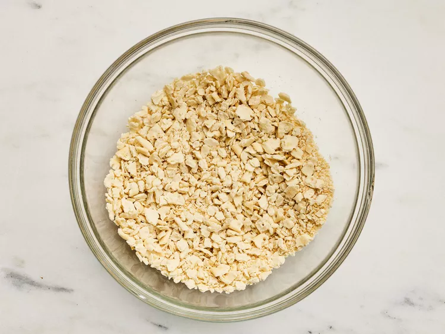
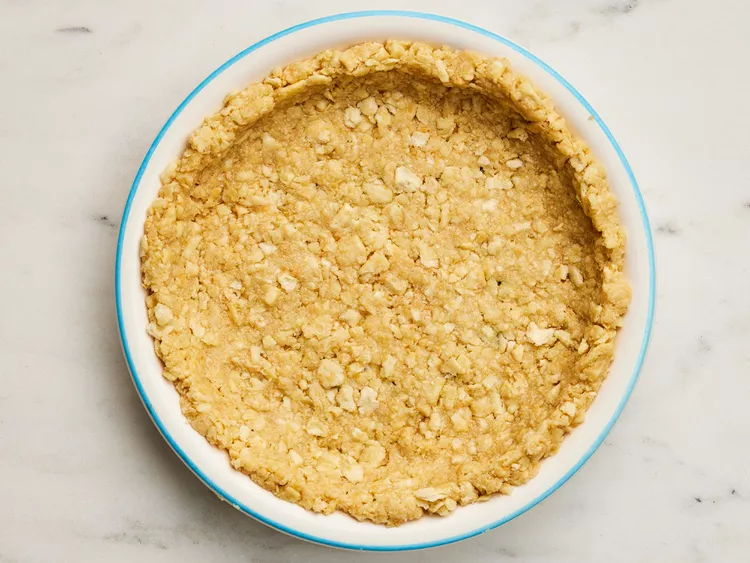
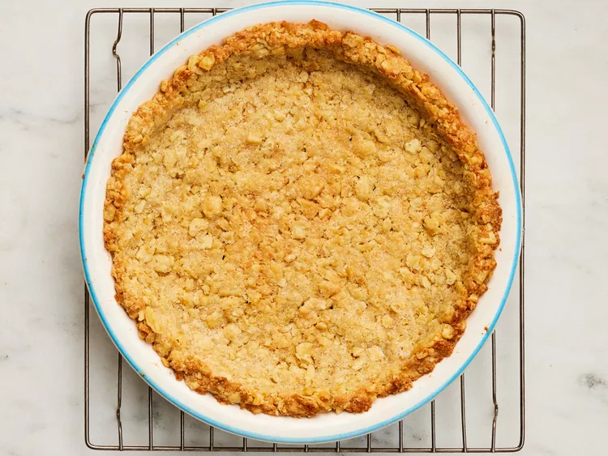
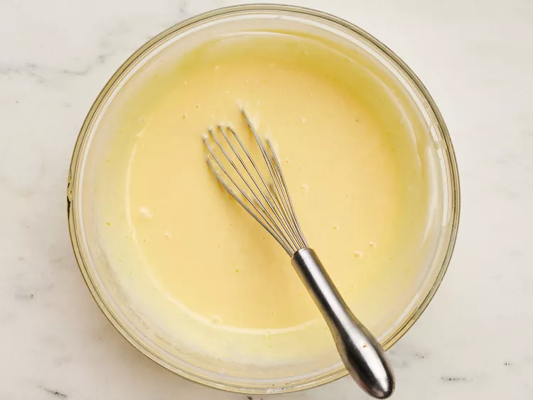
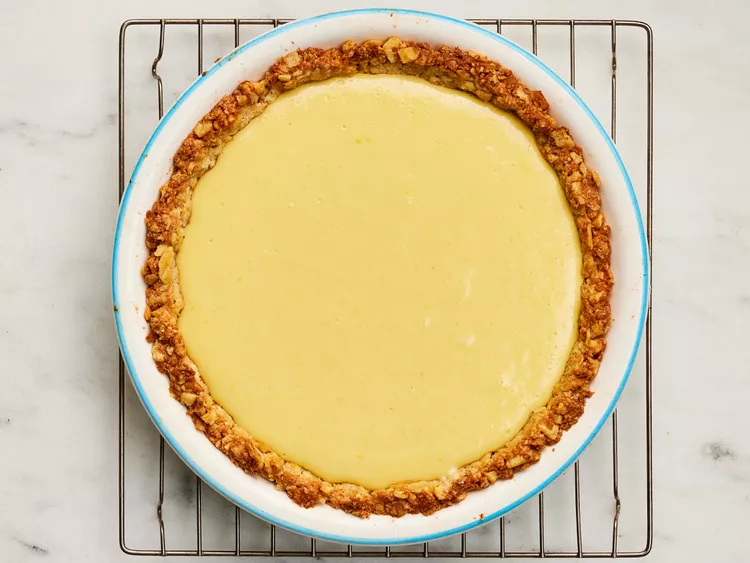
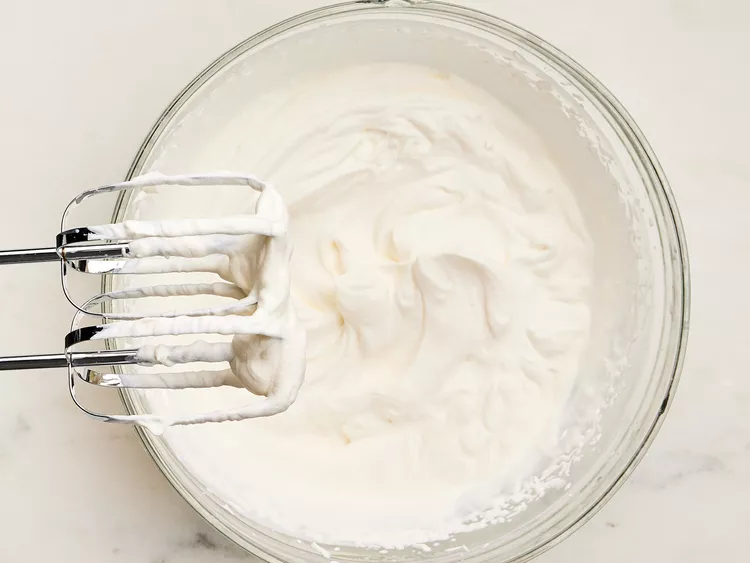
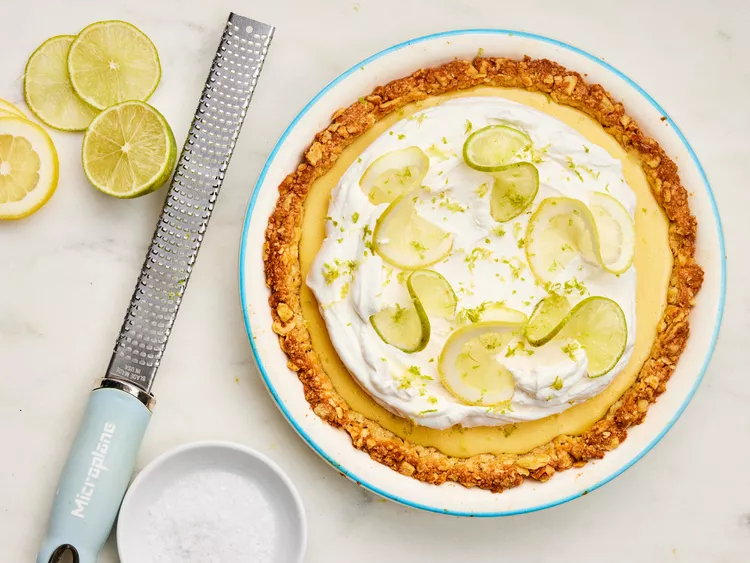

A buttery crumb crust made with saltines is the perfect base for this irresistible citrus pie.
Gather all ingredients
Crush saltines so that they resemble coarse meal. Stir crushed crackers, melted butter, sugar, and egg white together in a medium bowl until combined.
Transfer mixture to a 9-inch glass or ceramic standard pie plate greased with cooking spray; firmly press on bottom and up the sides. Freeze for 10 minutes.
Preheat the oven to 350 degrees F (175 degrees C).
Bake in the preheated oven until crust is lightly browned, 15 to 20 minutes. Transfer to a wire rack; cool slightly, about 10 minutes.
While crust cools, whisk condensed milk and egg yolks together until smooth. Zest 1 of the lemons and 1 of the limes to yield 1 teaspoon each. Juice zested lemon and 2 of the limes to yield 1/4 cup juice each. Whisk lime juice, lemon juice, and 1 teaspoon of the vanilla into condensed milk mixture until smooth. Pour mixture into warm crust.
Bake at 350 degrees F (175 degrees C) until center is just set, about 15 minutes. Transfer to a wire rack; cool 1 hour at room temperature. Refrigerate, uncovered, until thoroughly chilled, at least 2 hours.
When ready to serve, beat cream, powdered sugar, and remaining 1 teaspoon vanilla in a large bowl with an electric mixer on high speed until stiff peaks form, about 2 minutes.
Spread whipped cream topping over chilled pie, leaving about a 1/2-inch border of custard showing around crust. Thinly slice remaining lemon and lime into rounds. Twist slices and arrange decoratively over whipped cream. Sprinkle with reserved lemon and lime zest.
Enjoy!